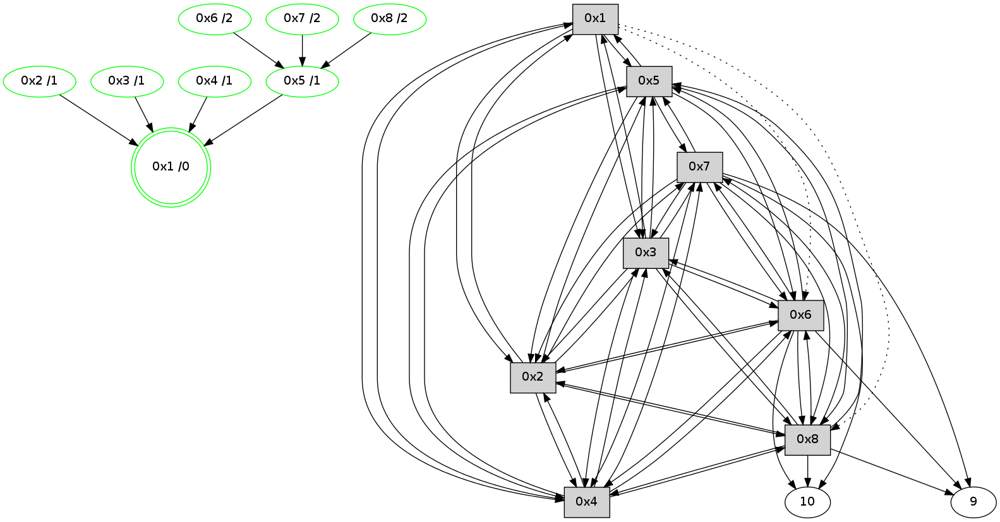

>> << IDX [start] -100 -25 -5 +0 +5 +25 [495.569669008]
 Previous packets
----------------------------------------------------------------------
490.027780 beacon01(11f6) #0 coord=01,02,03,04,05,06,07,08,0a,09 cycle=1008.0ms assoc
-- color-indic=0 64 c2 55
490.037949 beacon02(11f6) #0 coord=01,02,03,04,05,06,07,08,0a,09 cycle=1008.0ms assoc 64 51 64
490.047916 beacon03(11f6) #0 coord=01,02,03,04,05,06,07,08,0a,09 cycle=1008.0ms assoc 64 2b 29
490.057914 beacon04(11f6) #0 coord=01,02,03,04,05,06,07,08,0a,09 cycle=1008.0ms assoc 64 5c c3
490.067916 beacon05(11f6) #0 coord=01,02,03,04,05,06,07,08,0a,09 cycle=1008.0ms assoc 64 26 8e
490.077918 beacon06(11f6) #0 coord=01,02,03,04,05,06,07,08,0a,09 cycle=1008.0ms assoc 64 a8 59
490.087916 beacon07(11f6) #0 coord=01,02,03,04,05,06,07,08,0a,09 cycle=1008.0ms assoc 64 d2 14
490.097921 beacon08(11f6) #0 coord=01,02,03,04,05,06,07,08,0a,09 cycle=1008.0ms assoc 64 57 85
490.133806 [Hello(8): seq=245 sym=2,7,5,6,3,4,10,9 color=3 sysInfo=MaxColorIndicationCalled,ColoringModeIndicationCalled,MaxColorResponseCalled stat=2:0,15,0,13/7:15,15,2,10/5:12,0,2,2/6:14,0,0,11/3:5,15,13,12/4:8,0,15,12/10:1,10,9,7/9:5,14,8,2]
490.144521 [Hello(6): seq=245 sym=10,7,5,3,8,4,2,9 color=7 sysInfo=hasWarning,MaxColorIndicationCalled,ColoringModeIndicationCalled,MaxColorResponseCalled stat=10:1,10,10,7/7:15,15,2,10/5:6,14,3,2/3:12,0,0,13/8:7,1,15,3/4:11,0,11,12/2:5,15,15,11/9:3,14,15,3]
490.152409 [Hello(3): seq=245 sym=1,2,7,5,6,8,4 color=5 sysInfo=hasWarning,MaxColorIndicationCalled,ColoringModeIndicationCalled,MaxColorResponseCalled stat=1:5,1,4,0/2:8,0,1,14/7:3,14,2,9/5:3,1,15,2/6:1,1,2,12/8:5,0,14,2/4:10,0,2,13]
490.224914 [Hello(4): seq=245 sym=1,2,5,6,3,8,7 color=6 sysInfo=MaxColorIndicationCalled,ColoringModeIndicationCalled,MaxColorResponseCalled stat=1:4,0,5,0/2:8,1,2,13/5:12,14,3,2/6:3,0,2,12/3:14,0,0,11/8:6,0,13,2/7:9,14,2,10]
490.228535 [Hello(2): seq=245 sym=1,7,5,3,8,4,6 color=4 sysInfo=hasWarning,MaxColorIndicationCalled,ColoringModeIndicationCalled,MaxColorResponseCalled stat=1:4,1,4,0/7:2,14,2,10/5:5,1,3,2/3:8,0,0,11/8:5,0,14,2/4:7,15,1,13/6:12,1,1,12]
----------------------------------------------------------------------
491.136158 beacon01(11f6) #0 coord=01,02,03,04,05,06,07,08,0a,09 cycle=1008.0ms assoc
-- color-indic=0 64 7e 50
491.146315 beacon02(11f6) #0 coord=01,02,03,04,05,06,07,08,0a,09 cycle=1008.0ms assoc 64 ed 61
491.156295 beacon03(11f6) #0 coord=01,02,03,04,05,06,07,08,0a,09 cycle=1008.0ms assoc 64 97 2c
491.166293 beacon04(11f6) #0 coord=01,02,03,04,05,06,07,08,0a,09 cycle=1008.0ms assoc 64 e0 c6
491.176294 beacon05(11f6) #0 coord=01,02,03,04,05,06,07,08,0a,09 cycle=1008.0ms assoc 64 9a 8b
491.186293 beacon06(11f6) #0 coord=01,02,03,04,05,06,07,08,0a,09 cycle=1008.0ms assoc 64 14 5c
491.196295 beacon07(11f6) #0 coord=01,02,03,04,05,06,07,08,0a,09 cycle=1008.0ms assoc 64 6e 11
491.206298 beacon08(11f6) #0 coord=01,02,03,04,05,06,07,08,0a,09 cycle=1008.0ms assoc 64 eb 80
491.238398 [Hello(5): seq=245 sym=1,2,7,6,3,8,4 color=1 sysInfo=hasWarning,MaxColorIndicationCalled,ColoringModeIndicationCalled,MaxColorResponseCalled stat=1:5,0,4,0/2:8,1,2,13/7:6,14,2,10/6:5,1,1,12/3:12,0,3,12/8:6,15,14,2/4:9,1,15,12]
491.384337 [Hello(1): seq=246 sym=5,3,2,4 asym=8,6 color=0/10 sysInfo=hasWarning,MaxColorIndicationCalled,MaxColorResponseCalled,MaxColorRequestCalled,ColoringModeRequestCalled stat=5:6,0,4,2/3:14,0,3,13/2:9,0,2,14/4:11,1,2,14/8:9,0,14,2/6:8,1,1,12]
491.389093 [STC(1) #0.39 new-neigh,stable,to-color d=0]
----------------------------------------------------------------------
492.244535 beacon01(11f6) #0 coord=01,02,03,04,05,06,07,08,0a,09 cycle=1008.0ms assoc
-- color-indic=0 64 ba 5e
492.254690 beacon02(11f6) #0 coord=01,02,03,04,05,06,07,08,0a,09 cycle=1008.0ms assoc 64 29 6f
492.264672 beacon03(11f6) #0 coord=01,02,03,04,05,06,07,08,0a,09 cycle=1008.0ms assoc 64 53 22
492.274671 beacon04(11f6) #0 coord=01,02,03,04,05,06,07,08,0a,09 cycle=1008.0ms assoc 64 24 c8
492.284671 beacon05(11f6) #0 coord=01,02,03,04,05,06,07,08,0a,09 cycle=1008.0ms assoc 64 5e 85
492.294672 beacon06(11f6) #0 coord=01,02,03,04,05,06,07,08,0a,09 cycle=1008.0ms assoc 64 d0 52
492.304672 beacon07(11f6) #0 coord=01,02,03,04,05,06,07,08,0a,09 cycle=1008.0ms assoc 64 aa 1f
492.314676 beacon08(11f6) #0 coord=01,02,03,04,05,06,07,08,0a,09 cycle=1008.0ms assoc 64 2f 8e
492.369442 [Hello(2): seq=246 sym=1,7,5,3,8,4,6 color=4 sysInfo=hasWarning,MaxColorIndicationCalled,ColoringModeIndicationCalled,MaxColorResponseCalled stat=1:5,1,5,0/7:2,14,2,10/5:5,1,3,2/3:8,0,0,11/8:5,0,14,2/4:7,15,1,13/6:12,1,1,12]
492.372206 [Hello(4): seq=246 sym=1,2,5,6,3,8,7 color=6 sysInfo=MaxColorIndicationCalled,ColoringModeIndicationCalled,MaxColorResponseCalled stat=1:5,0,6,0/2:9,1,2,13/5:12,14,3,2/6:3,0,2,12/3:14,0,0,11/8:6,0,13,2/7:9,14,2,10]
492.375418 [STC(4)->1 #0.39 new-neigh,stable,to-color d=1]
492.376643 [STC(2)->1 #0.39 new-neigh,stable,to-color d=1]
492.385260 [Hello(7): seq=246 sym=10,5,6,8,3,2,4,9 color=2 sysInfo=hasWarning,MaxColorIndicationCalled,ColoringModeIndicationCalled,MaxColorResponseCalled stat=10:7,10,13,8/5:13,0,3,2/6:0,1,1,12/8:9,1,0,3/3:4,15,0,12/2:7,15,15,11/4:4,15,9,10/9:1,0,0,3]
492.409613 [Hello(6): seq=246 sym=10,7,5,3,8,4,2,9 color=7 sysInfo=hasWarning,MaxColorIndicationCalled,ColoringModeIndicationCalled,MaxColorResponseCalled stat=10:3,10,10,7/7:1,15,2,10/5:6,14,3,2/3:13,0,0,13/8:7,1,15,3/4:13,0,12,12/2:7,15,15,11/9:4,14,15,3]
492.412193 [Hello(8): seq=246 sym=2,7,5,6,3,4,10,9 color=3 sysInfo=MaxColorIndicationCalled,ColoringModeIndicationCalled,MaxColorResponseCalled stat=2:2,15,1,13/7:1,15,2,10/5:12,0,2,2/6:15,0,0,11/3:6,15,13,12/4:10,0,0,12/10:3,10,9,7/9:6,14,8,2]
492.469156 [Hello(3): seq=246 sym=1,2,7,5,6,8,4 color=5 sysInfo=hasWarning,MaxColorIndicationCalled,ColoringModeIndicationCalled,MaxColorResponseCalled stat=1:6,1,5,0/2:10,0,2,14/7:4,14,2,9/5:3,1,15,2/6:2,1,2,12/8:6,0,14,2/4:12,0,3,13]
492.473949 [STC(3)->1 #0.39 new-neigh,stable,to-color d=1]
----------------------------------------------------------------------
493.352915 beacon01(11f6) #0 coord=01,02,03,04,05,06,07,08,0a,09 cycle=1008.0ms assoc
-- color-indic=0 64 06 5b
493.363081 beacon02(11f6) #0 coord=01,02,03,04,05,06,07,08,0a,09 cycle=1008.0ms assoc 64 95 6a
493.373050 beacon03(11f6) #0 coord=01,02,03,04,05,06,07,08,0a,09 cycle=1008.0ms assoc 64 ef 27
493.383050 beacon04(11f6) #0 coord=01,02,03,04,05,06,07,08,0a,09 cycle=1008.0ms assoc 64 98 cd
493.393050 beacon05(11f6) #0 coord=01,02,03,04,05,06,07,08,0a,09 cycle=1008.0ms assoc 64 e2 80
493.413051 beacon07(11f6) #0 coord=01,02,03,04,05,06,07,08,0a,09 cycle=1008.0ms assoc 64 16 1a
493.423056 beacon08(11f6) #0 coord=01,02,03,04,05,06,07,08,0a,09 cycle=1008.0ms assoc 64 93 8b
493.453538 [Hello(5): seq=246 sym=1,2,7,6,3,8,4 color=1 sysInfo=hasWarning,MaxColorIndicationCalled,ColoringModeIndicationCalled,MaxColorResponseCalled stat=1:6,0,5,0/2:10,1,3,13/7:7,14,2,10/6:5,1,1,12/3:12,0,3,12/8:6,15,14,2/4:11,1,0,12]
493.456034 [STC(5)->1 #0.39 new-neigh,stable,to-color d=1]
493.514825 [STC(6)->5-.->1 #0.39 new-neigh,stable,to-color d=2]
493.563362 [STC(8)->5-.->1 #0.39 new-neigh,stable,to-color d=2]
493.565976 [Hello(1): seq=247 sym=5,3,2,4 asym=8,6 color=0/10 sysInfo=hasWarning,MaxColorIndicationCalled,MaxColorResponseCalled,MaxColorRequestCalled,ColoringModeRequestCalled stat=5:7,0,5,2/3:15,0,4,13/2:10,0,3,14/4:12,1,3,14/8:10,0,14,2/6:9,1,2,12]
493.580074 [STC(7)->5-.->1 #0.39 new-neigh,stable,to-color d=2]
----------------------------------------------------------------------
494.461293 beacon01(11f6) #0 coord=01,02,03,04,05,06,07,08,0a,09 cycle=1008.0ms assoc
-- color-indic=0 64 83 e5
494.471465 beacon02(11f6) #0 coord=01,02,03,04,05,06,07,08,0a,09 cycle=1008.0ms assoc 64 10 d4
494.481428 beacon03(11f6) #0 coord=01,02,03,04,05,06,07,08,0a,09 cycle=1008.0ms assoc 64 6a 99
494.491428 beacon04(11f6) #0 coord=01,02,03,04,05,06,07,08,0a,09 cycle=1008.0ms assoc 64 1d 73
494.501428 beacon05(11f6) #0 coord=01,02,03,04,05,06,07,08,0a,09 cycle=1008.0ms assoc 64 67 3e
494.511428 beacon06(11f6) #0 coord=01,02,03,04,05,06,07,08,0a,09 cycle=1008.0ms assoc 64 e9 e9
494.521430 beacon07(11f6) #0 coord=01,02,03,04,05,06,07,08,0a,09 cycle=1008.0ms assoc 64 93 a4
494.531431 beacon08(11f6) #0 coord=01,02,03,04,05,06,07,08,0a,09 cycle=1008.0ms assoc 64 16 35
494.602042 [Hello(2): seq=247 sym=1,7,5,3,8,4,6 color=4 sysInfo=hasWarning,MaxColorIndicationCalled,ColoringModeIndicationCalled,MaxColorResponseCalled stat=1:6,1,5,0/7:3,14,3,10/5:6,1,4,2/3:9,0,1,11/8:6,0,15,2/4:7,15,1,13/6:13,1,2,12]
494.617339 [Hello(4): seq=247 sym=1,2,5,6,3,8,7 color=6 sysInfo=MaxColorIndicationCalled,ColoringModeIndicationCalled,MaxColorResponseCalled stat=1:6,0,6,0/2:11,1,3,13/5:13,14,4,2/6:4,0,3,12/3:15,0,1,11/8:7,0,14,2/7:10,14,3,10]
494.650333 [Hello(8): seq=247 sym=2,7,5,6,3,4,10,9 color=3 sysInfo=MaxColorIndicationCalled,ColoringModeIndicationCalled,MaxColorResponseCalled stat=2:3,15,1,13/7:1,15,3,10/5:13,0,3,2/6:0,0,1,11/3:6,15,14,12/4:11,0,0,12/10:4,10,10,7/9:7,14,9,2]
494.656682 [Hello(7): seq=247 sym=10,5,6,8,3,2,4,9 color=2 sysInfo=hasWarning,MaxColorIndicationCalled,ColoringModeIndicationCalled,MaxColorResponseCalled stat=10:8,10,14,8/5:14,0,4,2/6:1,1,2,12/8:11,1,1,3/3:4,15,1,12/2:7,15,15,11/4:4,15,9,10/9:2,0,1,3]
494.669928 [Hello(6): seq=247 sym=10,7,5,3,8,4,2,9 color=7 sysInfo=hasWarning,MaxColorIndicationCalled,ColoringModeIndicationCalled,MaxColorResponseCalled stat=10:4,10,11,7/7:2,15,3,10/5:6,14,4,2/3:14,0,1,13/8:9,1,0,3/4:13,0,12,12/2:8,15,15,11/9:5,14,0,3]
494.690312 [Hello(3): seq=247 sym=1,2,7,5,6,8,4 color=5 sysInfo=hasWarning,MaxColorIndicationCalled,ColoringModeIndicationCalled,MaxColorResponseCalled stat=1:7,1,5,0/2:11,0,2,14/7:5,14,3,9/5:4,1,0,2/6:3,1,3,12/8:7,0,15,2/4:13,0,3,13]
494.711927 [Hello(5): seq=247 sym=1,2,7,6,3,8,4 color=1 sysInfo=hasWarning,MaxColorIndicationCalled,ColoringModeIndicationCalled,MaxColorResponseCalled stat=1:7,0,5,0/2:11,1,3,13/7:8,14,3,10/6:7,1,2,12/3:14,0,4,12/8:8,15,15,2/4:12,1,0,12]